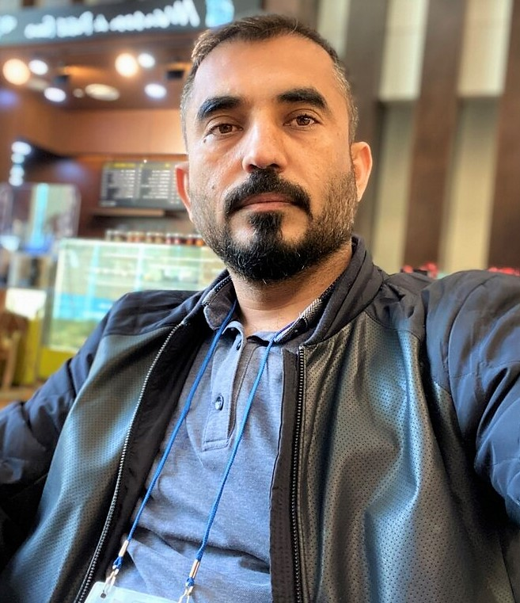

Muhammad Asif Khan
Post-doctoral Researcher
Qatar Mobility Innovations Center (QMIC), Doha, Qatar.
Download CV
Research Interests:
- Mobile computing
- Edge Intelligence
- Distributed Learning and Inference
- Automated drone surveillance
Note:- The list may not be updated. Please visit my Google Scholar profile for an up to date list of publications.
Journal Papers
- M. A. Khan, H. Menouar, and R. Hamila, "Curriculum for Crowd Counting - Is it Worthy?," in IEEE Transactions on Artificial Intelligence [submitted]. [PDF]
- M. A. Khan, H. Menouar, and R. Hamila, "Visual Crowd Analysis - Open Research Problems," in AI Magazine [submitted].
- M. A. Khan, H. Menouar, and R. Hamila, "LCDnet: A Lightweight Crowd Density Estimation Model for Real-time Video Surveillance," in Journal of Real-Time Image Processing., 20, 29, 2023. [PDF]
- M. A. Khan, H. Menouar, & R. Hamila, Revisiting Crowd Counting: State-of-the-art, Trends, and Future Perspectives. In Image and Vision Computing., 129, 104597, 2022. [PDF]
- M. A. Khan, H. Menouar, A. Eldeeb, A. Abu-Dayya, and F. D. Salim, "On the Detection of Unauthorized Drones—Techniques and Future Perspectives: A Review," in IEEE Sensors Journal, vol. 22, no. 12, pp. 11439-11455, 15 June 15, 2022. [PDF]
- M. A. Khan, R. Hamila, A. Erbad, and M. Gabbouj, "Distributed Inference in Resource-Constrained IoT for Real-Time Video Surveillance," in IEEE Systems Journal, 2022 [PDF]
- M. A. Khan, A. Erbad, R. Hamila and E. Baccour, “CODE: Computation Offloading in D2D-Edge System for Video Streaming” in IEEE Systems journal [Accepted]. [PDF]
- M. A. Khan, E. Baccour, Z. Chkirbene, A. Erbad, R. Hamila, H. Hamdi, and M. Gabbouj, "A Survey on Mobile Edge Computing for Video Streaming: Opportunities and Challenges," in IEEE Access, vol. 10, pp. 120514-120550, 2022. [PDF]
- M. A. Khan, R. Hamila, A. Gastli, S. Kiranyaz, and N. A. Al-Emadi, “ML-based Handover Prediction and AP Selection in Cognitive Wi-Fi Networks”, Journal of Network and Systems Management. 2022 Oct;30(4):1-21 [PDF]
- D. Unal, M. Hammoudeh, M. A. Khan, A. Abuarqoub, G. Epiphaniou, R. Hamila, “Integration of Federated Machine Learning and Blockchain for the Provision of Secure Big Data Analytics for Internet of Things”, Computers & Security, Jul. 2021 [PDF]
- M. A. Khan, R. Hamila, N. A. Al-Emadi, M. S. Kiranyaz, and M. Gabbouj, "Real-time Throughput Prediction for Cognitive Wi-Fi Networks", J. Netw. Comput. Appl., vol. 150, pp. 245-258, Sep. 2020. [PDF]
- M. A. Khan, R. Hamila and M. O. Hasna, "Optimal Group Formation in Dense Wi-Fi Direct Networks for Content Distribution," in IEEE Access, vol. 7, pp. 161231-161245, 2019. [PDF]
- M. A. Khan, R. Hamila, M. S. Kiranyaz, and M. Gabbouj, "A Novel UAV-Aided Network Architecture Using Wi-Fi Direct", in IEEE Access, vol. 7, pp. 67305-67318, 2019. [PDF]
- K. Shaaban, M. A. Khan, R. Hamila and M. Ghanim, “A Strategy for Emergency Vehicle Preemption and Route Selection”, Arabian Journal for Science and Engineering 83 (2019): 1-9. [PDF]
- M. A. Khan, W. Cherif, F. Filali and R. Hamila, "Wi-Fi direct research-Current status and future perspectives", J. Netw. Comput. Appl., vol. 93, pp. 245-258, Sep. 2017. [PDF]
Conference Papers
- M. A. Khan, H. Menouar, and R. Hamila, “Accelerating Learning with Fixed Time Budget”, submitted to AAAI 2024
- M. A. Khan, H. Menouar, and R. Hamila, “MMCount: Multimodal Crowd Counting with Pix2Pix GANs”, submitted to IAAI 2024”, submitted to AAAI 2024
- I. Mrad, E. Baccour, R. Hamila, M. A. Khan, A. Erbad, M. Hamdi, “RL-CEALS: Reinforcement Learning for Collaborative Edge Assisted Live Streaming”, in 28th IEEE Symposium Computers and Communications (ISCC) 9 -12 July, Tunis Tunisia. [
- M. A. Khan, R. Hamila, and H. Menouar, "CLIP: Train Faster with Less Data, in 2023 IEEE International Conference on Big Data and Smart Computing (BigComp), Jeju, Korea, Republic of, 2023, pp. 34-39. [PDF]
- M. A. Khan, H. Menouar, and R. Hamila, "Crowd Density Estimation Using Imperfect Labels”, 2023 IEEE International Conference on Consumer Electronics (ICCE), Las Vegas, NV, USA, 2023, pp. 1-6. [PDF]
- M. A. Khan, H. Menouar, and R. Hamila, "DroneNet: Crowd Density Estimation using Self-ONNs for Drones”, 2023 IEEE 20th Consumer Communications & Networking Conference (CCNC), Las Vegas, NV, USA, 2023, pp. 455-460. [PDF]
- M. A. Khan, H. Menouar, O. M. Khalid and A. Abu-Dayya, "Unauthorized Drone Detection: Experiments and Prototypes," 2022 IEEE International Conference on Industrial Technology (ICIT), Shanghai, China, 2022, pp. 1-6. [PDF]
- M. A. Khan, H. Menouar, and R. Hamila, “Drones-aided Asset Maintenance in Hospitals”, in 2nd International Conference on Computers and Automation (CompAuto 2022), August 18-22, 2022, Paris, France] [PDF]
- K. Shaaban, M. A. Khan, I. Kim and R. Hamila, “Queue Discharge at Freeway On-Ramps Using Coordinated Operation of a Ramp Meter and an Upstream Traffic Signal”, Procedia Computer Science, Volume 170, 2020, Pages 347-353, ISSN 1877-0509 [PDF]
- K. Rahman, S. Mallick, M. A. Khan, “Travel Time Estimation using Multivariate Regression Model”, In Qatar Foundation Annual Research Conference Proceedings Volume 2018 Issue 1 2018 Mar 21, Vol. 2016, No. 1, p. EEPD1051.
- W. Cherif, M. A. Khan, F. Filali, S. Sharafeddine, Z. Dawy, "P2P Group Formation Enhancement for Opportunistic Networks with Wi-Fi Direct", Proc. IEEE Wireless Commun. Netw. Conf. (WCNC), pp. 1-6, Mar. 2017. [PDF]
- M. A. Khan, W. Cherif, F. Filali and R. Hamila, "Realization of Dual-Hop Networks in Wi-Fi Direct and Performance Evaluation" 2017 IEEE International Conference on Internet of Things (iThings) and IEEE Green Computing and Communications (GreenCom) and IEEE Cyber, Physical and Social Computing (CPSCom) and IEEE Smart Data (SmartData), Exeter, 2017, pp. 552-559.
- M. A. Khan, W. Cherif, F. Filali, "Group Owner Election in Wi-Fi Direct", Proc. IEEE Annu. Ubiquitous Comput. Electron. Mobile Commun. Conf. (UEMCON), pp. 1-9, Oct. 2016.
- K. Shaaban, M. A. Khan, and R. Hamila, “Literature Review of Advancements in Adaptive Ramp Metering”, Procedia Computer Science 83 (2016): 203-211. [PDF]
- M. A. Khan, R. Hamila and K. Shaaban., “Mitigation of Traffic Congestion Using Ramp Metering on Doha Expressway”, In Qatar Foundation Annual Research Conference Proceedings Volume 2016 Issue 1 2016 Mar 21, Vol. 2016, No. 1, p. ICTSP2224.
- M. Shah, M. A. Khan, T. Mahmood, K. Islam, and J. Akbar, "Generation of orthogonally polarized chaotic waveforms for secure optical communication" 2013 IEEE 9th International Conference on Emerging Technologies (ICET), Islamabad, 2013, pp. 1-5.
- M. A. Khan, S. Zakiuddin and J. Ahmad, "Cross-layer optimization of dynamic source routing protocol using IEEE 802.11e based medium awareness", 2013 3rd IEEE International Conference on Computer, Control, and Communication (IC4), Karachi, 2013, pp. 1-6.
- M. S. Khan, S. Bashir, M. A. Khan, and K. Asaf, "Design and integration of dual-band textile antenna with high impedance surface", 2013 IEEE 9th International Conference on Emerging Technologies (ICET), Islamabad, 2013, pp. 1-6.
- M. A. Khan and S. Zakiuddin, "Research review of the development of novel routing algorithms for mobile Ad-hoc networks", Eighth International Conference on Digital Information Management (ICDIM 2013), 2013, pp. 61-66
Demos and Talks
- Machine Learning in Mobile Computing - Recent Trends, Opportunities and Challenges in The 2nd International Conference on Machine Learning and Intelligent Systems (MLIS2020) October 25-28, 2020. [Link]
- Network Slicing in 5G at College of Engineering, Qatar University, DOha, Qatar, April 11, 2023.